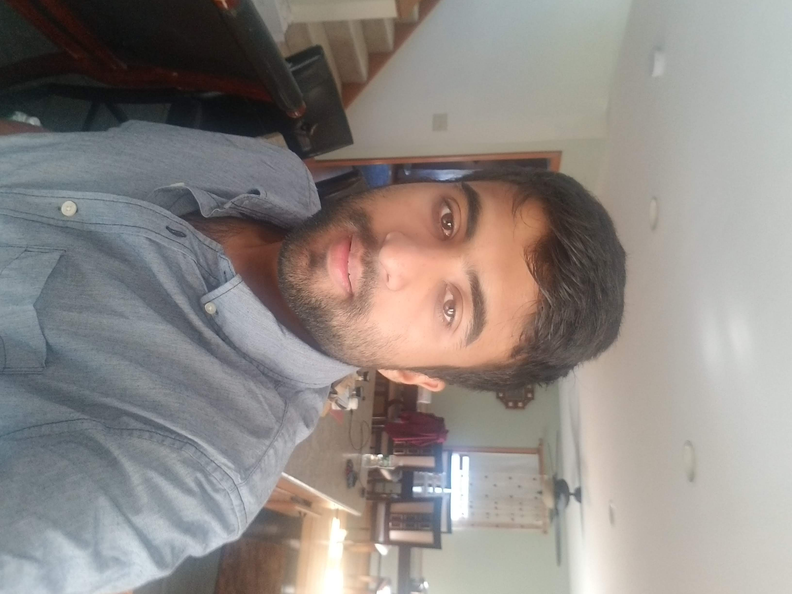

Introduction
Projects
Education
Work Experience
Welcome!
My name is Mohammad Taaha and I am an undergraduate at University Of Massachusetts Lowell studying computer science. I will be graduating this Decemeber. My dream job is to become a Cloud Architect. In my spare time, I play cricket and I also like to play video games. This past summer, I went to canada for a few days and also got certified as an AWS Architect. On my website you will find information on my Education and Work experience. Also you will see information on all the projects I have participated in.
